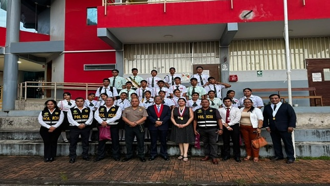

CORTE SUPERIOR DE JUSTICIA DE SAN MARTÍN
Justicia cerca
de ti.
Servicios, orientación y canales de atención de la Corte Superior de Justicia de San Martín, en un solo lugar.
Información y canales institucionales verificados

Una justicia más cercana a la ciudadanía↗
MOYOBAMBA · SAN MARTÍN · PERÚJUSTICIA, SERVICIO Y CERCANÍA
SERVICIOS JUDICIALES¿Cómo podemos
¿Cómo podemos
orientarte?
Accesos para ciudadanos, profesionales y usuarios judiciales. Los servicios externos se realizan en plataformas oficiales.
ORIENTACIÓN PARA TIUn primer paso
Un primer paso
más claro.
Encuentra información oficial, ubica tu sede y accede al canal adecuado para realizar tus trámites.
Conoce la CorteACTUALIDAD INSTITUCIONALLo que sucede
Todas las noticias
Lo que sucede
en la Corte.
PODER JUDICIAL DEL PERÚLa justicia como
La justicia como
servicio público.
El Poder Judicial administra justicia a través de sus órganos jurisdiccionales en todo el país. Esta Corte acerca ese servicio a la ciudadanía de San Martín.
Portal oficial del Poder Judicial ↗Resolver conflictos y garantizar derechos con autonomía e independencia.
Jr. Pedro Canga N.º 354 · Cómo llegar →
Acceso a la información pública por los canales oficiales. Ver portal →